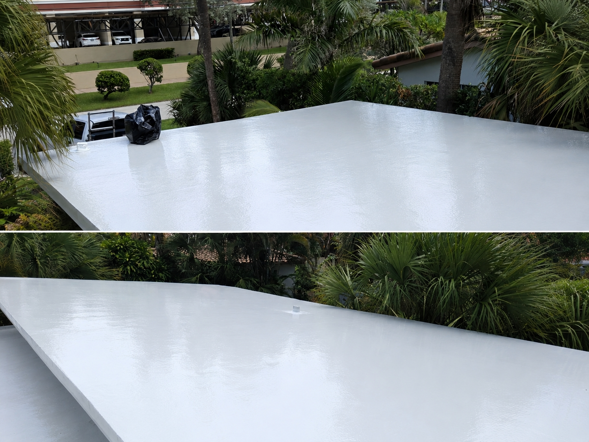

Protection without the full tear-off
On a suitable roof, restoration can help extend its useful life while avoiding a complete replacement.
BROWARD & MIAMI-DADE COUNTY
Leaks, heat, and South Florida weather take their toll. Give your roof a fresh start with seamless silicone roof coating.

01 / WHAT WE DO
From the roof over your home to the space where you work, explore a restoration approach that fits your property.
02 / OUR WORK
Before-and-after projects from our own portfolio. Take a closer look at what a fresh start can look like.
03 / WHY SILICONE?
Intense sun. Heavy rain. Standing water. A silicone coating creates a continuous protective membrane over a suitable existing roof.
Find out if your roof qualifies ↗On a suitable roof, restoration can help extend its useful life while avoiding a complete replacement.
A white coating reflects sunlight and helps reduce heat absorbed by the roof.
Silicone coating is designed to resist ponding water and retain flexibility through changing conditions.
A continuous coating seals and protects the roof surface. Proper preparation makes the difference.
A CLEAR PATH TO A BETTER ROOF
Share your location, roof type, and what you’ve noticed. Start with a call or email.
Have your roof assessed and ask about preparation, scope, materials, and pricing.
For an eligible roof, a silicone coating provides a new protective surface.
LOCAL ROOFS. LOCAL KNOW-HOW.
Serving residential and commercial properties throughout Broward and Miami-Dade counties.
It depends on its condition, surface, and existing damage. A roof assessment helps determine whether coating is a suitable option or whether repairs or replacement are needed first.
Homes and commercial properties, including carports, garages, patios, sunrooms, and mobile homes. Ask about your particular roof.
Roof size, condition, preparation, and access affect the price. Contact us for a free estimate specific to your property.
Ask which product will be used and request the applicable written material and workmanship terms, coverage, and exclusions with your estimate.
LET'S TAKE CARE OF YOUR ROOF
Request your free estimate. Tell us a little about your property, and let’s talk through the next step.
(786) 878-3528 ↗lucacarolli.lc@gmail.comLuca Carroli · Owner